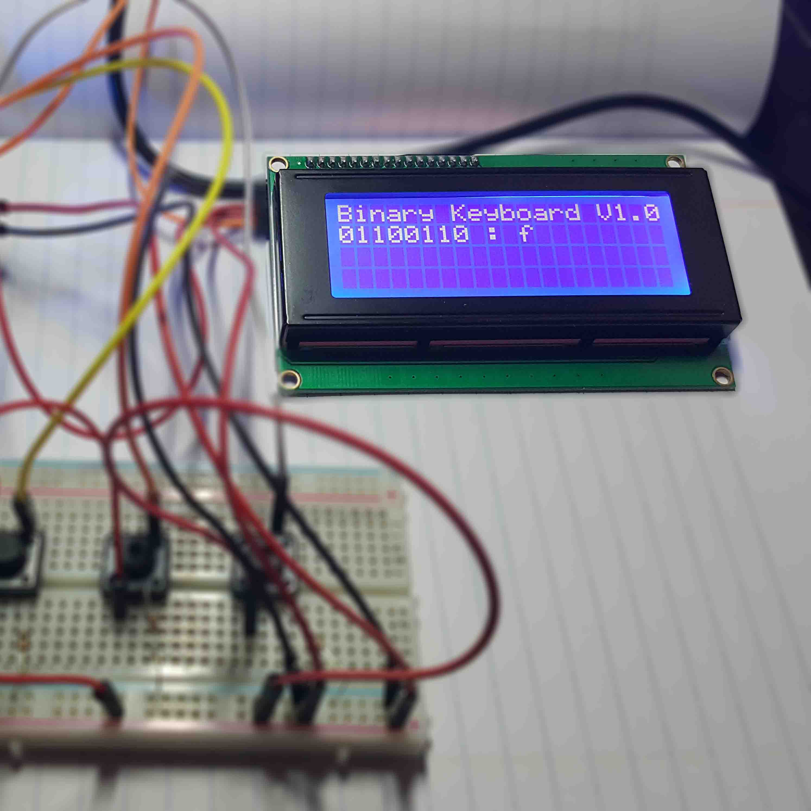

About Me
I am a passionate developer that believes heavily in open source for the masses. I write clean, efficent code and I am constantly learning a new techonology or perfecting my grasp on a familiar one. I began programming when I was tweleve years old and I haven't looked back since then. While working full time as a software developer for Grooters Productions in Holland, Mi. I am also enrolled in Davenport University currently majoring in Computer Science and minoring in Computer Engineering. Along with programming I have a strong interest in art and electronics.
Recent Projects
Binary Keybaord
Work Experience
Software Developer - Grooters Productions (2016 - Present)
I landed this job as a software developer straight out of high school due to my already years of experience in development. I was responsible for developing products for clients and communicating with them to learn what solution would suite their needs. I worked with many technologies such as PHP, Wordpress, Python, Blender Scripting, Javascript, Ionic, Visual Basic & .NET. Additionally I was responsible for building servers for development and data back up out of parts I selected and ordered online.
Advanced Repair Agent - Geek Squad (2015 - 2016)
I worked as a computer repair tech for my senior yaer of high school. I was responsible for removing any infections on a client's machine, repairing hardware issues and building custom machines on client's request. Additionally I was to perform data backups; by removing a machine's HDD and backing up to a NAS, as well as an external drive.